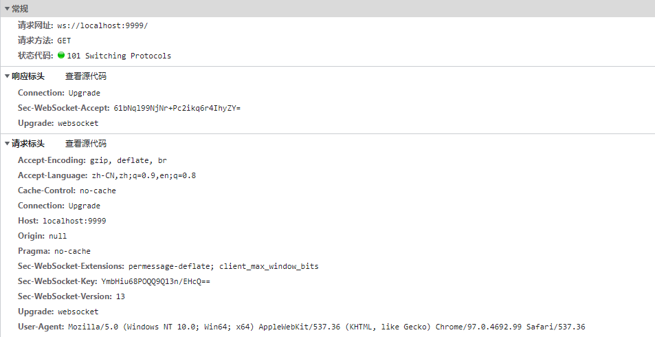

举例来说，我们想了解今天的天气，只能是客户端向服务器发出请求，服务器返回查询结果。 HTTP 协议做不到服务器主动向客户端推送信息。
这种单向请求的特点，注定了如果服务器 有连续的状态变化 ，客户端要获知就非常麻烦。我们只能使用"轮询"：每隔一段时候，就发出一个询问，了解服务器有没有新的信息。最典型的场景就是聊天室。
轮询的效率低，非常浪费资源（因为必须不停连接，或者 HTTP 连接始终打开）。因此，工程师们一直在思考，有没有更好的方法。 WebSocket 就是这样发明的。
入门
1.服务端
代码如下，监听 3001 端口。当有新的连接请求到达时，打印日志，同时每隔 3秒 向客户端发送消息，消息内容是当前时间戳。
提前安装两个库： express, ws
1
2
3
4
5
6
7
8
9
10
11
12
13
14
15
16
17
18
19
20
21
22
23
24
|
const express = require('express');
const app = express();
app.use(express.static(__dirname));
app.listen(3001);
const Server = require('ws').Server;
const ws = new Server({ port: 9999 });
ws.on('connection', function(socket) {
socket.on('message', function(msg) {
console.log(msg);
setInterval(()=>{
socket.send(`当前时间是： ${new Date().getTime()}`);
},3000)
});
});
|
2.客户端
index.html代码如下，向 3001 端口发起 WebSocket 连接。连接建立后，向服务端发送消息。接收到来自服务端的消息后，同样打印日志，并在页面中渲染。
1
2
3
4
5
6
7
8
9
10
11
12
13
14
15
16
17
18
19
20
21
22
23
24
25
26
27
28
29
30
31
32
33
34
35
| <!DOCTYPE html>
<html lang="en">
<head>
<meta charset="UTF-8">
<meta http-equiv="X-UA-Compatible" content="IE=edge">
<meta name="viewport" content="width=device-width, initial-scale=1.0">
<title>Document</title>
</head>
<body>
<script>
let ws = new WebSocket('ws://localhost:9999');
ws.onopen = function () {
ws.send('hello,server!');
};
ws.onmessage = function (res) {
console.log(res);
console.log(res.data);
var childNode = document.createElement('p');
childNode.innerText = res.data;
document.body.appendChild(childNode);
};
</script>
</body>
</html>
|
3.运行
- 运行
server.js，3001端口的服务就被打开了
node ./server.js
- 运行
index.html 到浏览器，页面隔3秒就会新增一行当前时间,如下：
当前时间是： 1643006471350
当前时间是： 1643006474353
当前时间是： 1643006477367
当前时间是： 1643006480373
当前时间是： 1643006483387
当前时间是： 1643006486389
当前时间是： 1643006489401
当前时间是： 1643006492410
表示服务器在不停地向客户端主动发送数据
- 查看请求头
